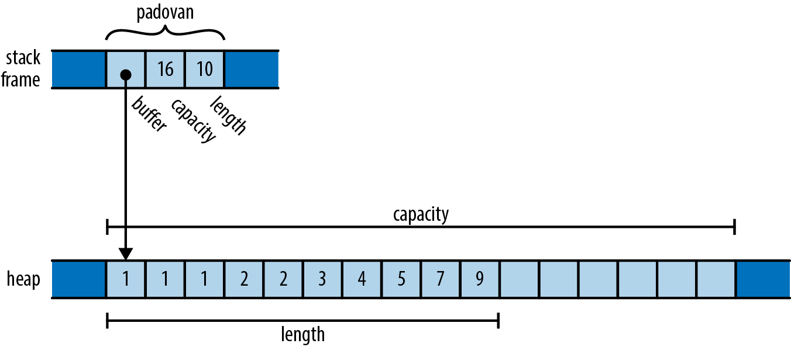

Hippocampus: A brain region that helps people to remember by linking different parts of a memory together.
Rustocampus: A place that helps me to remember Rust.
Rustocampus is a work-in-progress, and it always will be. I'll keep updating it while exploring Rust.
Formatted Print
std::fmt has utilities for formatting and printing Strings. Some of which include:
format!: write formatted text toStringprint!: same asformat!but the text is printed to the console (io::stdout).println!: same asprint!but a newline is appended.eprint!: same asprint!but the text is printed to the standard error (io::stderr).eprintln!: same aseprint!but a newline is appended.write!: emit the format string to a specified stream.writeln!same aswrite!but a newline is appended
Positional paramaters
#![allow(unused)] fn main() { println!("{1} {} {0} {}", 1, 2); // => 2 1 1 2 let formatted : String = format!("{1} {} {0} {}", 1, 2); println!("{formatted}"); // => 2 1 1 2 }
Named paramaters
#![allow(unused)] fn main() { let seven = 7; println!("{one} {two} ... {seven}", one = 1, two = 2); }
Escaping
The literal characters { and } may be included in a string by preceding them with the same character.
#![allow(unused)] fn main() { println!("Hello, {{}} {}", "{World!}"); }
Using write! of std::io::Write and std::fmt::Write
use std::io::{self, Write as _}; use std::fmt::Write as _; fn main() -> io::Result<()> { write!(&mut io::stdout(), "Hello, {}!", "World")?; let mut vec = Vec::new(); write!(&mut vec, "Hello, {}!", "World")?; assert_eq!(vec, b"Hello, World!"); let mut s = String::new(); write!(&mut s, "Life is {}", "Bootiful"); // std::fmt::Write assert_eq!(s, "Life is Bootiful"); Ok(()) }
Using format_args!
- result is of type
fmt::Arguments - result can be passed around
- no heap allocation
use std::io::{self, Write}; use std::fmt::{self}; fn write_error_log(arg: fmt::Arguments) -> std::io::Result<()>{ writeln!(&mut io::stdout(), "{}", arg )?; Ok(()) } fn main() -> io::Result<()> { write_error_log(format_args!("Error number is {}.", 1))?; Ok(()) }
Format Syntax
format_string := text [ maybe_format text ] *
maybe_format := '{' '{' | '}' '}' | format
format := '{' [ argument ] [ ':' format_spec ] [ ws ] * '}'
argument := integer | identifier
format_spec := [[fill]align][sign]['#']['0'][width]['.' precision]type
fill := character
align := '<' | '^' | '>'
sign := '+' | '-'
width := count
precision := count | '*'
type := '' | '?' | 'x?' | 'X?' | identifier
count := parameter | integer
parameter := argument '$'
{[argument]':'[[fill] align][sign]['#'][width [$]]['.' precision [$]][type]}
-
argument => number(0, 1, 2, ..) or name
#![allow(unused)] fn main() { println!("{0} {1}", "arg_1", "arg_2"); // with argument number let arg_1 = "arg_1"; let arg_2 = "arg_2"; println!("{arg_1} {arg_2}"); // with argument name } -
fill => the character to fill empty spaces, if
widthis specified -
align => left(<), center (^), right (>), if
widthis specified#![allow(unused)] fn main() { println!("{:!>6}", "@@"); // !!!!@@ println!("{0:!<6}", "@@"); // @@!!!! let double_at = "@@"; println!("{double_at:!^6}"); // !!@@!! } -
width [$] => width to be padded with
fill(default to space), can be number or paramater, if paramater '$' must be used#![allow(unused)] fn main() { println!("{:0width$}", 1, width = 4); // 0001 println!("{:0<width$}", 1, width = 4); // 1000 println!("{:0^width$}", 1, width = 4); // 0100 println!("{:01$}", 1, width = 4); // 0001 println!("{:0<1$}", 1, width = 4); // 1000 println!("{:0^1$}", 1, width = 4); // 0100 println!("{:!>width$}", "1", width = 4); // !!!1 println!("{:!<width$}", "1", width = 4); // 1!!! println!("{:!^width$}", "1", width = 4); // !1!! println!("{:>4}", 1); // padded with space (space is default) } -
sign =>
+can be used for numeric types to display sign (negative sign is only displayed for signed values)#![allow(unused)] fn main() { println!("{}", 1000); // 1000 println!("{:+}", 1000); // +1000 } -
precision [$] => decimal digits for number or max width for non-number, can be number or paramater, if paramater '$' must be used.
.*means that this {...} is associated with two format inputs rather than one:#![allow(unused)] fn main() { // the output of all lines below is // => Hello x is 0.01000 println!("Hello {0} is {1:.5}", "x", 0.01); println!("Hello {1} is {2:.0$}", 5, "x", 0.01); println!("Hello {0} is {2:.1$}", "x", 5, 0.01); println!("Hello {} is {:.*}", "x", 5, 0.01); println!("Hello {1} is {2:.*}", 5, "x", 0.01); println!("Hello {} is {2:.*}", "x", 5, 0.01); println!("Hello {} is {number:.prec$}", "x", prec = 5, number = 0.01); } -
#indicates that the "alternate” form of printing should be used. The alternate forms are:#?pretty-print the Debug formatting (adds linebreaks and indentation)#xprecedes the argument with a 0x#Xprecedes the argument with a 0x#bprecedes the argument with a 0b#oprecedes the argument with a 0o
#![allow(unused)] fn main() { println!("{:#?}", "test"); // => "test" println!("{:#x}", 16); // => 0x10 println!("{:#X}", 16); // => 0x10 println!("{:#b}", 2); // => 0b10 println!("{:#o}", 8); // => 0o10 println!("{:#?}", (1, "one", 3.3)); // => ( // 1, // "one", // 3.3, // ) }
Formatting Traits
- nothing ⇒ Display
- ? ⇒ Debug
- x? ⇒ Debug with lower-case hexadecimal integers
- X? ⇒ Debug with upper-case hexadecimal integers
- o ⇒ Octal
- x ⇒ LowerHex
- X ⇒ UpperHex
- p ⇒ Pointer
- b ⇒ Binary
- e ⇒ LowerExp
- E ⇒ UpperExp
Ownership & Borrowing
- Each value in Rust has an owner.
- There can only be one owner at a time.
- When the owner goes out of scope, the value will be dropped. ( call
drop) - At any given time, you can have either one mutable reference or any number of immutable references. (one writer or multiple readers)
- References must always be valid.
Rust won't allow double free or dangling pointer in safe mode.
fn borrow(b: &String) { println!("borrow -> {b}"); } fn mut_borrow(mb: &mut String) { *mb = "updated".to_string(); } fn move_msg(m: String) { println!("{m}"); } fn main() { let mut msg = String::from("hello"); borrow(&msg); println!("{msg}"); mut_borrow(&mut msg); println!("{msg}"); borrow(&msg); println!("{msg}"); move_msg(msg); // error here because msg was moved in above line println!("{msg}"); }
keywords
- borrow, move
- copy, drop
- dangling pointer
- double free
SUMMARY (from a reddit user)
The borrowing and ownership mechanism can be simplified down to:
- Passing a variable by value will move ownership, dropping the original variable from memory
- Passing a variable by mutable reference will keep the original variable, but allow you to modify the variable.
- You may only borrow a variable mutably once at a time, and you may not immutably borrow while mutably borrowing.
- You may have as many immutable borrows as you want, so long as you aren't modifying that value.
- You may mutably borrow a field in a struct, and then mutably borrow a different field in the same struct simultaneously, so long as you aren't also mutably borrowing the overall struct.
- You can use
CellandRefCellto allow for mutably modifying an immutable field in a struct. - You may mutably borrow multiple slices from the same array simultaneously so long as there is no overlap.
- Safe memory practices means that instead of mutably borrowing the same variable in multiple places, you queue the changes to make in a separate location and apply them serially one after another.
From chatgpt
Ownership
- Every value in Rust has a single owner.
- When the owner goes out of scope, the value is automatically dropped (freed from memory).
- You can borrow a value from its owner, allowing you to use the value without taking ownership of it.
- When a value is borrowed, the original owner cannot modify the value until the borrow goes out of scope.
fn main() { let x = 5; // x is a new i32 value with the value 5 let y = x; // y is a new i32 value with the value 5 // x is no longer needed, so it is dropped println!("{}", y); // prints 5 }
Borrowing
There are two types of borrowing in Rust: immutable borrowing and mutable borrowing.
Immutable borrowing is done using the & operator. It allows you to use a value without changing it, but it does not allow you to modify the value.
fn main() { let x = 5; let y = &x; // y is an immutable borrow of x println!("{}", y); // prints 5 *y = 6; // error: cannot assign to immutable borrowed value }
Mutable borrowing is done using the &mut operator. It allows you to use and modify a value, but it requires that you have exclusive access to the value for the duration of the borrow.
fn main() { let mut x = 5; let y = &mut x; // y is a mutable borrow of x *y = 6; // ok: we can modify x through y println!("{}", y); // prints 6 }
Stack & Heap
Stack
The stack is a region of memory that is used to store local variables and function call frames in a program. It is organized in a Last-In, First-Out (LIFO) order, which means that the last value pushed onto the stack is the first one that is popped off.
In Rust, the stack is used to store local variables and function call frames. Local variables are created and destroyed automatically as the program runs, and they are stored in a LIFO order. Function call frames are created when a function is called, and they are destroyed when the function returns.
The stack has a number of useful properties:
- It is fast to allocate and deallocate memory, because it does not require any dynamic memory allocation.
- It has a fixed size, which means that it is not possible to allocate more memory on the stack than it has available.
- It is easy to reason about, because values on the stack have a well-defined lifetime.
However, the stack also has some limitations:
- It has a fixed size, which means that it is not possible to allocate arbitrarily large amounts of memory on the stack.
- Values on the stack cannot outlive the function they were created in, because they are automatically destroyed when the function returns.
Heap
The heap is a region of memory that is used to store dynamic data structures, such as vectors, strings, and boxes. It is a general-purpose memory pool that can be used to allocate and deallocate memory at runtime.
In Rust, the heap is used to store values that have a longer lifetime than the function they were created in. These values are allocated using dynamic memory allocation, which involves requesting memory from the operating system at runtime.
The heap has a number of useful properties:
- It allows values to have a longer lifetime than the function they were created in.
- It allows values to be shared between multiple threads.
- It allows the size of a value to be determined at runtime, rather than at compile time.
However, the heap also has some limitations:
- It is slower to allocate and deallocate memory than the stack, because it requires dynamic memory allocation.
- It is more difficult to reason about, because the lifetime of a value on the heap is not always clear.
Rust stack vs Thread-local stack
The thread-local stack, on the other hand, is a stack that is specific to a particular thread of execution. Each thread in a program has its own stack, which is used to store local variables and function call frames for that thread.
In Rust, the stack is used to store local variables and function call frames for all threads in a program. Each thread has its own stack, which is used to store local variables and function call frames for that thread.
Box
- When you have a type whose size can’t be known at compile time and you want to use a value of that type in a context that requires an exact size (recursive type)
- When you have a large amount of data and you want to transfer ownership but ensure the data won’t be copied when you do so
- When you want to own a value and you care only that it’s a type that implements a particular trait rather than being of a specific type (trait object)
// when b goes out of scope, the deallocation happens both for the box(sotred on the stack) // and the data it points to (stored on the heap) fn main() { let b = Box::new(5); println!("{b}"); }
Box usage in recursive type
#[derive(Debug)] enum List<T> { Nil, Cons(T, Box<List<T>>) } fn main() { use crate::List::{Nil, Cons}; let l = Cons(1, Box::new(Cons(2, Box::new(Cons(3, Box::new(Nil)))))); dbg!(l); }
The Box
type is a smart pointer because it implements the Deref trait, which allows Box values to be treated like references. When a Box value goes out of scope, the heap data that the box is pointing to is cleaned up as well because of the Drop trait implementation.
Rc And Arc
In Rust, Rc (short for "reference counted") and Arc (short for "atomic reference counted") are types that allow you to share values between multiple owners. They are similar to Box, which represents ownership of a value on the heap, but they allow multiple owners.
Rc is a non-thread-safe reference counted type, which means that it is not safe to share an Rc value between threads. It is useful for sharing values within a single-threaded context, such as when building a tree data structure. A value owned by an Rc pointer is immutable.
Arc is a thread-safe reference counted type, which means that it is safe to share an Arc value between threads. It is useful for sharing values between threads, because it allows multiple threads to access the value concurrently.
Rc in memory
#![allow(unused)] fn main() { use std::rc:Rc; let s : Rc<String> = Rc:new("shirataki".to_string()); let t : Rc<String> = s.clone(); let u : Rc<String> = s.clone(); }
Well-known problem with using reference counts
One well-known problem iwht using reference counts to manage memory is that, if there are ever two reference-counted values that point to each other, each will hold the other's reference count above zero, so the values will never be freed.

Example

use std::rc::Rc; #[derive(Debug)] enum List<T> { Nil, Cons(T, Rc<List<T>>) } fn main() { use crate::List::{Cons, Nil}; let a = Rc::new(Cons(5, Rc::new(Cons(10, Rc::new(Nil))))); let b = Rc::new(Cons(3, Rc::clone(&a))); let c = Rc::new(Cons(4, Rc::clone(&a))); println!("{b:?}"); println!("{c:?}"); }
Interior Mutability
- Mutating the value inside immutable value is called interior mutability
- With
RefCell<T>, the following borrowing rules are enfored at runtime. If the rules are broken, the program will panic and exit- At any given time, you can have either (but not both) one mutable reference or any number of immutable references.
- References must always be valid.
Cell<T>andRefCell<T>are not thread safe. UseMutex<T>,RwLock<T>oratomictypes for multi threading.
Example Cell<T>
use std::cell::Cell; struct Counter { value : Cell<i32> } fn main() { let c = Counter { value : Cell::new(0) }; println!("{:?}", c.value); c.value.set(1); println!("{:?}", c.value); }
Basic Example RefCell<T>
use std::cell::RefCell; struct Foo { value : RefCell<i32>, } fn main() { let foo = Foo { value : RefCell::new(5) }; println!("{:?}", foo.value); *foo.value.borrow_mut() = 10; println!("{:?}", foo.value); }
RefCell<T> dynamically enforces the borrow checking rules and panic if violates.
fn main() { use std::cell::RefCell; let a = RefCell::new(String::from("hello")); let alias = a.borrow(); println!("{alias}"); let mut m = a.borrow_mut(); // panic here cause already borrowed mutably m.push_str(" world"); }
With Rc<T> that holds RefCell<T>, a value can have mutiple owners and can be mutated.
use std::rc::Rc; use std::cell::RefCell; use crate::List::{ Nil, Cons }; #[derive(Debug)] enum List<T> { Nil, Cons(Rc<RefCell<T>>, Rc<List<T>>), } fn main() { let value = Rc::new(RefCell::new(5)); let a = Rc::new(Cons(Rc::clone(&value), Rc::new(Nil))); let b = Cons(Rc::new(RefCell::new(3)), Rc::clone(&a)); let c = Cons(Rc::new(RefCell::new(4)), Rc::clone(&a)); *value.borrow_mut() = 10; println!("{a:?}"); println!("{b:?}"); println!("{c:?}"); }
Weak Reference
Weak references (also known as weak pointers) are references that do not increase the reference count of an object. They allow objects to have circular references without causing memory leaks.
Weak references are created using the std::rc::Weak type, which is a wrapper around a non-owning reference to an object that is managed by Rc. Unlike Rc, which increments the reference count of an object when it is created, Weak does not increase the reference count and can therefore be used to break reference cycles.
use std::{rc::{Rc, Weak}, cell::RefCell, borrow::Borrow}; #[derive(Debug)] struct Node { value : i32, parent: RefCell<Weak<Node>>, children: RefCell<Vec<Rc<Node>>>, } fn main() { let a = Rc::new(Node { value: 5, parent: RefCell::new(Weak::new()), children: RefCell::new(vec![]) }); let b = Rc::new(Node{ value: 10, parent: RefCell::new(Rc::downgrade(&a)), children: RefCell::new(vec![]) }); a.children.borrow_mut().push(Rc::clone(&b)); dbg!(a); }
Notes
Rust programs don't usually explicitly drop values at all, in the way C and C++ programs would use free and delete. The way to drop a value in Rust is to remove it from the ownership tree somehow: by leaving the scope of a variable, or deleting an element from a vector, or something of that sort. At that point, Rust ensures the value is properly dropped, along with everything it owns.
Weak references, which are references that do not increase the reference count of an object, allow objects to have circular references without causing memory leaks.
Illustrations
The following illustrations are from Programming Rust and The Rust Book.
A vector
#![allow(unused)] fn main() { let padovan = vec![1, 1, 1, 2, 2, 3, 4, 5, 7, 9]; }

A box and a string
#![allow(unused)] fn main() { let point = Box::new((0.625, 0.5)); let label = format!("{:?}", point); }

A vector containing instances of a struct
#![allow(unused)] fn main() { struct Person { name : String, birth : i32 } let mut composers = Vec::new(); composers.push(Person { name : "Palenstrina".to_string(), birth: 1525 }); composers.push(Person { name : "Dowland".to_string(), birth: 1563 }); composers.push(Person { name : "Lully".to_string(), birth: 1632 }); }

A string and a ref to it
#![allow(unused)] fn main() { let s1 = String::new("hello"); let s = &s1; }
s stores the address of s1.

A vec containing strings
#![allow(unused)] fn main() { let s = vec!["udon".to_string(), "ramen".to_string(), "soba".to_string()]; let t = s; }
s in memory

The result of assigning s to t

Assigning a String moves the value, whereas assigning an i32 copies it
#![allow(unused)] fn main() { let string1 = "somnambulance".to_string(); let string2 = string1; let num1 : i32 = 36; let num2 = num1; }

Reference & lifetime
Rust has two type of pointers mainly:
- Owning pointers e.g.
Box<T>- When the owner is dropped, the referent goes with it. - Nonowning pointers a.k.a references - references must never outlive their referents.
There are two kinds of Nonowning pointers or references:
- Shared reference:
& - Mutable reference:
&mut
Which obey the following rules:
- A reference cannot outlive its referent
- A mutable reference cannot be shared
References have a lifetime associated with them, which specifies the scope of the reference. The lifetime of a reference must be a subset of the lifetime of the value it references. This ensures that a reference never points to a value that no longer exists.
Shared Reference
- Rust allows multiple shared references
- Rust doesn't allow shared referencees to mutate their referents
- Shared references must not outlive theire referents
- Shared references are
Copy &eis a shared reference to e's value; ifehas typeT, then&ehas the type&Tpronouncedref T
Mutable Reference
- With a mutable reference to a value, it can be read or modified
- Rust allow only one mutable reference to a value at a time
&mut eis a mutable reference to e's value; ifehas typeT, then&mut ehas the type&mut Tpronouncedref mute T
Reference
References are created explicitly with the & operator, and dereferenced explicitly with the * operator.
#![allow(unused)] fn main() { let x = 10; let rx = &x; assert!(*rx == 10); let mut y = 11; let ry = &mut y; *ry += 1; assert!(*ry == 12); }
The . operator implicitly dereferences its left operand if needed.
#![allow(unused)] fn main() { pub struct Person { name : &'static str, age : f32 } let john_ref = &john; assert!(john_ref.name == "John"); // implicitly dereference assert!((*john_ref).name == "John"); // same as above, but with explicit dereference assert!(john_ref.age == 40.3); assert!((*john_ref).age == 40.3); }
The
.operator can also implicitly borrow a reference to its left operand, if needed for a method call.
#![allow(unused)] fn main() { let mut v = vec![10, 20, 3]; v.sort(); // implicitly borrow a mutable reference to v (&mut v).sort(); // same as above }
Assigning References
Assigning to a Rust reference makes it point at a new value:
#![allow(unused)] fn main() { let x = 10; let y = 20; let mut r = &x; println!("{r}"); r = &y; println!("{r}"); }
References to References
Rust permits references to references.
#![allow(unused)] fn main() { struct Point { x : f32, y : f32 } let p1 = Point { x : 1000, y : 729 }; let r : &Point = &p1; let rr : &&Point = &r; let rrr : &&&Point = &rr; assert_eq!(rrr.y, p1.y); assert_eq!((*(*(*rrr))).y, p1.y); }
The . operator follows as many references as it takes to find its target as seen above
rrr.y
Borrow an illustration from The Programming Rust Book

Comparing References
Like the . operator, Rust's comparison operators "see through" any number of references, as long as both operands have the same type.
#![allow(unused)] fn main() { let a = 10; let b = 20; let c = 10; let ra = &a; let rb = &b; let rc = &c; let rra = &ra; let rrb = &rb; let rrc = &rc; assert!(rra < rrb); assert!(rra <= rrb); assert!(rra == rrc); assert!(rrb > rrc); assert!(rrb >= rrc); // both operands should have same level of references assert!(rrb >= &&10); // Arithmetic operators can see through only one level of references assert!(rb == &(ra + &10)); }
Arithmetic operators can see through only one level of references
Checking references pointing to same memory location
std::ptr::eq
#![allow(unused)] fn main() { let x = 1; let rx1 = &x; let rx2 = &x; println!("{}", std::ptr::eq(rx1, rx2)); }
References are never Null and there is no default initial value for a reference. If you need a value that is either a reference to something or not, use the type
Option<&T>.
Borrowing references to arbitrary expressions
Rust allows you borrow a reference to the value of any sort of expression at all.
fn get_str() -> String { "hello".to_string() } fn main() { // Rust here create an anonymous variable // and make sure it is variable as long as the variable s let s = &get_str(); println!(s); }
Fat & Thin Pointer
Thin pointer
- A thin pointer only contains the memory address it points to.
#![allow(unused)] fn main() { let a = 10; let ra = &a; println!("{:p}", &a); println!("{:p}", ra); assert_eq!(format!("{:p}", &a), format!("{:p}", ra)); let rra = &ra; println!("{:p}", &ra); println!("{:p}", rra); assert_eq!(format!("{:p}", &ra), format!("{:p}", rra)); }
Fat pointer
A fat pointer contains both the address of a memory location it points to and additional metadata like the length of the allocation or a pointer to vtable in Trait Object.
&[T], &mut [T], &str are fat pointers
A reference to a slice [T] or str is a fat pointer, carrying the starting address of the slice and its length. [T] and str are dynamically sized types and that's the reason we see them as &[T], &mut [T] and &str.
The representation of &[T], &mut [T], &str might look like below:
#![allow(unused)] fn main() { struct SliceRef { ptr : *const i32 len : usize } }
#![allow(unused)] fn main() { let arr : [i32; 5] = [1, 2, 3, 4, 5]; let slice_arr : &[i32] = &arr[..3]; println!("{slice_arr:?}"); println!("{:p}", &arr); println!("{:p}", slice_arr); assert_eq!(format!("{:p}", &arr), format!("{:p}", slice_arr)); println!("{}", std::mem::size_of::<i32>()); // 4 bytes println!("{}", std::mem::size_of::<[i32; 5]>()); // 4 * 5 = 20 bytes // size of the pointer pointing to value of type [i32; 5] println!("{}", std::mem::size_of::<&[i32; 5]>()); // 8 bytes // &[i32] is a fat pointer println!("{}", std::mem::size_of::<&[i32]>()); // 16 bytes // &str is a fat pointer println!("{}", std::mem::size_of::<&str>()); // 16 bytes }
Trait Object is a fat pointer
A reference to a trait type is called a trait object. A Trait Object consists of a pointer to the value, plus a pointer to a table representing that value's type.
#![allow(unused)] fn main() { let mut buf = Vec::new(); let writer : &mut dyn std::io::Write = &mut buf; println!("{}", std::mem::size_of::<Vec<i32>>()); // 24 bytes - buffer, capacity, length println!("{}", std::mem::size_of::<Vec<String>>()); // 24 bytes bytes - buffer, capacity, length println!("{}", std::mem::size_of::<&dyn std::io::Write>()); // 16 bytes }

Lifetime
A lifetime is a construct in Rust that represents the scope of a reference. The purpose of lifetimes is to ensure that references are always valid or to ensure a reference doesn't outlive its referent.
Lifetimes are entirely figments of Rust's compile-time imagination. At runtime, a reference is nothing but an address; its lifetime is part of its type and has no runtime representation. -- The Programming Rust book
The main aim of lifetimes is to prevent dangling references. -- The Book
Lifetime annotation ('a pronounce tick a)
&i32 // a reference without lifetime annotation
&'a i32 // a reference with explicit lifetime annotation
&'a mut i32 // a mutable reference with explicit lifetime annotation
Lifetime elision rules
Lifetime elision rules are a set of rules in Rust that allow the compiler to infer lifetimes in certain cases, without the need for explicit annotations.
- First Rule: Rust assigns a different lifetime paramater to each lifetime in each input type.
fn foo(x : &i32)becomesfn foo<'a>(x : &'a i32)fn foo(x : &i32, y : &i32)becomesfn foo<'a, 'b>(x : &'a i32, y : &'b i32)fn foo(x : &ImportantExcerpt)becomesfn foo<'a>(x : &'a ImportantExcerpt)
- Second Rule: If there is exactly one input lifetime parameter, that lifetime is assigned to all output lifetime parameters:
fn foo<'a>(x: &'a i32) -> &'a i32 - Third Rule: If there are multiple input lifetime parameters, but one of them is
&selfor&mut selfbecause this is a method, the lifetime of self is assigned to all output lifetime parameters.
Lifetimes on functions
Dangling reference example
// 'b is smaller than 'a and Rust rejects the program fn main() { let r; // ---------+-- 'a // | { // | let x = 5; // -+-- 'b | r = &x; // | | } // -+ | // | println!("r: {}", r); // | } // ---------+
The following functions return dangling references and won't compile.
#![allow(unused)] fn main() { fn longest(fst : &str, snd: &str) -> &str { let string = "hello"; return string.as_str(); } // the returning lifetime is not related to the lifetime of paramaters fn longest_2<'a>(fst : &str, snd: &str) -> &'a str { let string = "hello"; return string.as_str(); } }
Passing references and returning a reference from function
Lifetime annotations need to be explicitly provided if Rust cannot infer lifetimes for input or output paramaters.
fn max<'a>(a : &'a i32, b : &'a i32) -> &'a i32 { if *a > *b { a } else { b } } // this is OK fn max<'a>(a : &'a i32, b : &i32) -> &'a i32 { a } // dangling pointer case here. won't compile fn max_inner(a : &i32) -> &i32 { let b = 5; max(&a, &b) } fn main() { let x = 10; let y = 20; let result = max(&x, &y); println!("{result}"); // occurs dangling pointer and won't compile let result = max_inner(&x); println!("{result}"); }
Lifetime with mutable references Example
2 lifetime annotations - one for mutable referenced container and one for the shared value - must be explicitly provided in the following example.
fn insert_str<'c, 'v>(source: &'c mut String, s : &'v str) { source.push_str(s); } fn insert_num<'c, 'v>(nums : &'c mut Vec<&'v i32>, num : &'v i32) { nums.push(num); } fn main() { let mut source = String::new(); insert_str(&mut source, "hello"); insert_str(&mut source, " world"); println!("{:?}", source); let mut nums = Vec::new(); insert_num(&mut nums, &10); insert_num(&mut nums, &11); println!("{:?}", nums); }
Lifetimes on Types
Whenever a reference type appears inside another type's definition, you must write out its lifetime.
#[derive(Debug)] struct FirstLast<'a> { first: &'a i32, second: &'a i32, } // no need to explicitly annotate lifetimes here // due to the first and second rule of lifetime elision rules fn get_first_last(source: &[i32]) -> FirstLast { FirstLast { first : &source[0], second: &source[source.len() - 1], } } fn main() { let nums = vec![3,4,5,2,3,4,1,-2]; let fl = get_first_last(&nums); println!("{fl:?}"); }
Lifetime annotation on Enums.
#![allow(unused)] fn main() { enum MaybeString<'a> { Maybe(&'a str), Nothing } }
Lifetimes on Method definition
#[derive(Debug)] struct Excerpt<'a> { part : &'a str } impl<'a> Excerpt<'a> { fn new(part : &'a str) -> Self { Excerpt { part } } fn display_and_return_part(&self) -> &str { println!("{self:?}"); self.part } } fn main() { let s = "hello world"; let expt = Excerpt::new(s.split(' ').next().unwrap()); expt.display_and_return_part(); }
The Static Lifetime ('static)
#![allow(unused)] fn main() { let s : &'static str = "I'm static string" }
I'm static string is stored directly in the program's binary which is located in static memory region.
struct
3 types of struct
- regular (C-like) struct
#[derive(Debug)] struct Person { name : String, age : f32 } fn main() { let ryan = Person { name : "Ryan".to_string(), age : 6.3 }; println!("{:?}", ryan); /* field punning */ let name = "Ryan".to_string(); let age = 6.3; let ryan = Person { name, age }; // <- println!("{:?}", ryan); /* with pattern match */ let Person { name, age } = ryan; println!("{name}, {age}"); /* spreading, assign fields */ let Person { name : n, age : a } = Person { name : "Ryan Clone".to_string(), .. ryan } ; println!("{n}, {a}"); }
- tuple struct
#![allow(unused)] fn main() { struct Person(String, f32); }
- unit struct
#![allow(unused)] fn main() { struct Any; struct Never; struct Unit; }
A struct with some methods
extern crate chrono; use chrono::format::ParseResult; use chrono::prelude::*; use std::fmt; struct Lang { name: String, type_system: String, created_at: ParseResult<NaiveDate>, } impl Lang { fn new(name: &str, type_system: &str, created_at: &str) -> Lang { Lang { name: name.to_string(), type_system: type_system.to_lowercase(), created_at: NaiveDate::parse_from_str(created_at, "%d/%m/%Y"), } } } impl fmt::Display for Lang { fn fmt(&self, f: &mut fmt::Formatter) -> fmt::Result { let d = if let Ok(d) = self.created_at { d.format("%d/%m/%Y").to_string() } else { "".to_string() }; write!( f, "name : {}, type_system : {}, created_at : {}", self.name, self.type_system, d ) } } fn main() { let rust = Lang::new("Rust", "Strong, Static", "1/1/2010"); println!("{rust}"); }
Tuple struct
Fields of a tuple struct can be accessed using implicit field names (0,1,...)
struct RGB(i32, i32, i32); fn main() { let c = RGB(1, 255, 255); println!("R={}, G={}, B={}", c.0, c.1, c.2); /* patern match */ let RGB(r, g, b) = c; println!("{r}, {g}, {b}"); if let RGB (_, g,_ ) = c { println!("G is {g}."); } }
Tuple struct can be used for Newtype pattern.
use std::fmt::{Display, Formatter, Result}; use std::ops::Add; struct Pound(f32); struct Kilogram(f32); impl Add<Pound> for Kilogram { type Output = Kilogram; fn add(self, rhs: Pound) -> Self::Output { Kilogram(self.0 + (rhs.0 / 2.2)) } } impl Display for Kilogram { fn fmt(&self, f: &mut Formatter) -> Result { write!(f, "{} Kg", self.0) } } fn main() { let weight = Pound(198.); let zero =Kilogram(0.); println!("weight: {}", zero + weight); }
Unit struct
Unit structs are most commonly used as marker. They have a size of zero bytes, but unlike empty enums they can be instantiated, making them isomorphic to the unit type (). Unit structs are useful when you need to implement a trait on something, but don’t need to store any data inside it.
-- From here
struct Marker {} // use empty braces
struct Phontom; // or just semicolon
// use same notation when creating an instance
let m = Marker {} ;
let m = Marker; // throws error
let p = Phontom;
Realworld Usage of unit struct from StackOverflow
Global
The global memory allocator, Global, is a unit struct:
pub struct Global;
It has no state of its own (because the state is global), but it implements traits like Allocator.
std::fmt::Error
The error for string formatting, std::fmt::Error, is a unit struct:
pub struct Error;
It has no state of its own, but it implements traits like Error.
RangeFull
The type for the .. operator, RangeFull, is a unit struct:
pub struct RangeFull;
It has no state of its own, but it implements traits like RangeBounds.
Crates
chrono::Utc
The Utc timezone is a unit struct:
pub struct Utc;
It has no state of its own, but it implements traits like TimeZone and is thus usable as a generic argument to Date and DateTime.
Generics
#[derive(Debug)]
struct Point<T> {
x: T,
y: T,
}
#[derive(Debug)]
struct Point2D<A, B> {
x: A,
y: B,
}
Generics in method definition
Tdeclared just afterimplwill let Rust compiler identifies that the type paramater in the angle brackets inPointis a generic type rather than a concrete.
impl<T> Point<T> {
fn new(x: T, y: T) -> Point<T> {
Point { x, y }
}
}
impl<T> Point<T> {
fn x(&self) -> &T {
&self.x
}
}
impl<A, B> Point2D<A, B> {
fn new(x: A, y: B) -> Self {
Self { x, y }
}
fn x(&self) -> &A {
&self.x
}
fn y(&self) -> &B {
&self.y
}
}
Generic type paramaters in a struct definition can be different from the ones used in that struct's method signatures.
impl<X1, Y1> Point2D<X1, Y1> {
fn mixup<X2, Y2>(self, other: Point2D<X2, Y2>) -> Point2D<X1, Y2> {
Point2D {
x: self.x,
y: other.y,
}
}
}
An
implblock can only apply to a struct with a particular concrete type for the generic type paramater.
impl Point<f32> {
fn distance(&self) -> f32 {
(self.x.powi(2) + self.y.powi(2)).sqrt()
}
}
Runnable Code
#[derive(Debug)] struct Point<T> { x: T, y: T, } #[derive(Debug)] struct Point2D<A, B> { x: A, y: B, } impl<T> Point<T> { fn new(x: T, y: T) -> Point<T> { Point { x, y } } } impl<T> Point<T> { fn x(&self) -> &T { &self.x } } impl<A, B> Point2D<A, B> { fn new(x: A, y: B) -> Self { Self { x, y } } fn x(&self) -> &A { &self.x } fn y(&self) -> &B { &self.y } } impl<X1, Y1> Point2D<X1, Y1> { fn mixup<X2, Y2>(self, other: Point2D<X2, Y2>) -> Point2D<X1, Y2> { Point2D { x: self.x, y: other.y, } } } impl Point<f32> { fn distance(&self) -> f32 { (self.x.powi(2) + self.y.powi(2)).sqrt() } } fn main() { let p = Point::new(10.10, 20.20); println!("{:?}", p); println!("{:?}", p.x()); println!("{:?}", p.distance()); let p_2d = Point2D::new(1, 2.2); println!("{:?}", p_2d); println!("x = {:?}", p_2d.x()); println!("y = {:?}", p_2d.y()); let mixed_point = p_2d.mixup(Point2D::new(1000.0, 2000.0)); print!("{:?}", mixed_point); }
Monomorphization
"Compile-time process where polymorphic functions are replaced by many monomorphic functions for each unique instantiation." -- Wikipedia
"The code that results from monomorphization is doing static dispatch, which is when the compiler knows what method you're calling at compile time." -- The Book
Before monomorphization
fn id<T>(x: T) -> T { x } fn main() { let int_id = id(10); let f32_id = id(1.1_f32); let string_id = id("hello"); println!("{}", int_id); println!("{}", f32_id); println!("{}", string_id); }
After Monomorphization
Rust might generate monomorphic functions with different naames.
fn id_i32(x: i32) -> i32 { x } fn id_f32(x: f32) -> f32 { x } fn id_str(x: &str) -> &str { x } fn main() { let int_id = id_i32(10); let f32_id = id_f32(1.1_f32); let string_id = id_str("hello"); println!("{}", int_id); println!("{}", f32_id); println!("{}", string_id); }
Traits
- Similiar to
interfaceortypeclassormodular-implicitin other languages - Trait defines shared behaviors in an abstract way.
- Trait enables paramateric and ad-hoc polymorphism in Rust.
- Trait consists of 3 kinds of associated item - functions, types, constants.
- All traits define an implicit type paramater
Selfthat refers to "the type that is implementing this trait" - Trait functions are not allowed to be
asyncorconst.
trait Example {
const CONST_WITH_NO_DEFAULT : i32,
const CONST_WITH_WITH_DEFAULT : i32 = 10,
type item,
fn method_without_default(&self);
fn method_with_default(&self) { }
}
orphan rule dictates that external traits cannot be implemented for external types to ensure code doesn't break if two crates provide conflicting implementations.
A simple trait implementation
- To implement a trait, use
impl Trait for Typeblock - One impl block per type per trait
pub trait Greeting { fn say_hi(&self) { println!("Hi"); } fn greet(&self); } struct Italian; struct French; struct English; impl Greeting for Italian { fn greet(&self) { println!("Ciao"); } } impl Greeting for French { fn greet(&self) { println!("Bonjour"); } } impl Greeting for English { fn greet(&self) { println!("Hello"); } } fn main() { Italian.say_hi(); French.say_hi(); English.say_hi(); Italian.greet(); French.greet(); English.greet(); }
impl trait
impl Trait can appear in two places:
- argument position: anonymous type paramater
- return position : abstract return type
trait Trait {}
fn foo(arg : impl Trait) { }
fn bar() -> impl Trait { }
Generic type paramater vs impl Trait
trait Trait {}
fn foo_generic<T: Trait>(arg : T) { }
fn foo_impl(arg : impl Trait) { }
foo_genericcan do likefoo_generic::<i32>(1)butfoo_implcan't
#![allow(unused)] fn main() { fn bar_generic<T: Trait> -> T { } fn bar_impl() -> impl Trait { } }
bar_genericallows the caller to determine the return typeT, butbar_implwon't
impl Trait in return position
// instead of this
fn returns_closure() -> Box<dyn Fn(i32) -> i32> {
Box:new(|x| x + 1)
}
// we can do this with impl trait to avoid heap allocation and dynmic dispatch
fn returns_closure() -> impl Fn(i32) -> i32 {
|x| x + 1
}
Limitations
impl Trait can appear in a free or inherent function
- as a paramater
- as a return type
It can't appear
- inside implementation of traits
- let binding
- inside a type alias
&impl Trait
#![recursion_limit="1000"] use std::fmt::Display; enum Node<T> { Leaf(T), Children(Vec<Node<T>>), } impl<T: Display> Node<T> { fn traverse(&self, f: &impl Fn(&T)) { match self { Node::Leaf(x) => f(x), Node::Children(children) => { for n in children { n.traverse(f); } } } } } fn main() { let tree = Node::Children(vec![ Node::Leaf(1), Node::Children(vec![Node::Leaf(2), Node::Leaf(3), Node::Leaf(4)]), ]); tree.traverse(&|x| println!("{x}")) }
Trait Bound
impl syntax
fn double<T>(x: impl Add<Output = T> + Copy) -> T {
x + x
}
Trait Bound Syntax
fn double_2<T: Add<Output = T> + Copy>(x: T) -> T {
x + x
}
fn add<T: Add<Output = T>>(x: T, y: T) -> T {
x + y
}
Trait Bound with where clause
Trait Bound Syntax
fn double_3<T>(x: T) -> T
where
T: Add<Output = T> + Copy,
{
x + x
}
fn add_2<T>(x: T, y: T) -> T
where
T: Add<Output = T>,
{
x + y
}
fn foo<A, B>(x: A, y: B) -> i32
where
A: Display + Clone,
B: Debug + Clone,
{
unimplemented!()
}
complete source code of above
use std::{fmt::Debug, fmt::Display, ops::Add}; fn double<T>(x: impl Add<Output = T> + Copy) -> T { x + x } fn double_2<T: Add<Output = T> + Copy>(x: T) -> T { x + x } fn add<T: Add<Output = T>>(x: T, y: T) -> T { x + y } fn double_3<T>(x: T) -> T where T: Add<Output = T> + Copy, { x + x } fn add_2<T>(x: T, y: T) -> T where T: Add<Output = T>, { x + y } fn foo<A, B>(x: A, y: B) -> i32 where A: Display + Clone, B: Debug + Clone, { unimplemented!() } fn main() { println!("{}", double(1)); println!("{}", double(1.1)); println!("{}", double_2(10)); println!("{}", double_3(20)); println!("{}", add(10, 2)); println!("{}", add_2(10, 2)); }
Conditionally Implement Methods
use std::{fmt::Display, ops::Add}; struct Pair<T> { x: T, y: T, } impl<T> Pair<T> { fn new(x: T, y: T) -> Self { Self { x, y } } } // conditionally implement methods inside this impl block impl<T: Add<Output = T> + Copy + Display> Pair<T> { fn double_display(&self) { let dp = Pair::new(self.x + self.x, self.y + self.y); println!("x = {}, y = {}", dp.x, dp.y); } } fn main() { let p = Pair::new(1.1, 2.2); p.double_display(); // the following won't work, compile time error // let pstr = Pair::new("hello".to_string(), "world".to_string()); // pstr.double_display(); }
Blanket Implementations
"Implementations of a trait on any type that satisfies the trait bounds are called blanket implementations." -- The Book
use std::fmt::{Display, Formatter, Result}; struct Point<T> { x: T, y: T, } impl<T> Point<T> { fn new(x: T, y: T) -> Self { Self { x, y } } } impl<T: Display> Display for Point<T> { fn fmt(&self, f: &mut Formatter) -> Result { write!(f, "x : {}, y : {}", self.x, self.y) } } fn main() { let p = Point::new(1.1, 2.2); let pstr = p.to_string(); println!("{pstr}"); }
let pstr = p.to_string(); works because of the following blanket implementation in Rust Standard library.
#![allow(unused)] fn main() { impl<T : Display> ToString for T { ... } }
ToString trait is implemented in Standard library for any type that satisfies Display trait.
Trait Object
- A trait object is a fat pointer which is two-word values carrying the address of some value, along with some further information necessary to put the value to use.
- A trait object is a reference to a value that implements a certain trait.
- A trait object is an opaque value of another type that implements an object safe base trait, its auto traits(
Send,Sync,Unpin,UnwindSafe,RefUnwindSafe), and any supertraits of the base trait. - Trait objects are written as the keyword
dynfollowed by a set of trait bounds - the first must be auto traits, and one life time if any. Paths to trait may be parenthesized.
e.g -
dyn Traitdyn Trait + Senddyn Trait + Send + Syncdyn Trait + 'staticdyn Trait + Send + 'staticdyn Trait +dyn 'static + Trait.dyn (Trait)
Due to the opaqueness of which concrete type the value is of, trait objects are dynamically sized types. Like all DSTs, trait objects are used behind some type of pointer; for example &dyn SomeTrait or Box<dyn SomeTrait>. Each instance of a pointer to a trait object includes:
- A pointer to an instance of a type T that implements SomeTrait
- A virtual method table, often just called a vtable, which contains, for each method of SomeTrait and its supertraits that T implements, a pointer to T's implementation (i.e. a function pointer).
Object safe traits can be the base trait of a trait object Object Safety, Object safe trait
Ref: Rust Docs
Returning a single trait using impl
pub trait Runnable {
fn run(&self);
}
struct Dog;
struct Cat;
impl Runnable for Dog {
fn run(&self) {
println!("The dog is running.")
}
}
impl Runnable for Cat {
fn run(&self) {
println!("The cat is running.")
}
}
fn get_running_dog() -> impl Runnable {
Dog {}
}
⛔ Rust won't allow this
fn get_runner(kind: i32) -> impl Runnable {
if kind == 1 {
Dog {}
} else {
Cat {}
}
}
Trait Object to rescue
fn get_runner_dyn(kind: i32) -> &'static dyn Runnable {
if kind == 1 {
&Dog {}
} else {
&Cat {}
}
}
fn get_runner_box(kind: i32) -> Box<dyn Runnable> {
if kind == 1 {
Box::new(Dog {})
} else {
Box::new(Cat {})
}
}
fn invoke_runner_dyn(runner: &dyn Runnable) {
runner.run();
}
fn invoke_runner_box(runner: Box<dyn Runnable>) {
runner.run();
}
full source code
pub trait Runnable { fn run(&self); } struct Dog; struct Cat; impl Runnable for Dog { fn run(&self) { println!("The dog is running.") } } impl Runnable for Cat { fn run(&self) { println!("The cat is running.") } } fn get_running_dog() -> impl Runnable { Dog {} } // but we can't do this in Rust /* fn get_runner(kind: i32) -> impl Runnable { if kind == 1 { Dog {} } else { Cat {} } } */ fn get_runner_dyn(kind: i32) -> &'static dyn Runnable { if kind == 1 { &Dog {} } else { &Cat {} } } fn get_runner_box(kind: i32) -> Box<dyn Runnable> { if kind == 1 { Box::new(Dog {}) } else { Box::new(Cat {}) } } fn invoke_runner_dyn(runner: &dyn Runnable) { runner.run(); } fn invoke_runner_box(runner: Box<dyn Runnable>) { runner.run(); } fn main() { get_running_dog().run(); get_runner_dyn(2).run(); get_runner_box(1).run(); invoke_runner_dyn(&Dog {}); invoke_runner_box(Box::new(Dog {})); }
Trait Object Layout
let mut buf : Vec<u8> = vec![];
let writer : &mut Write = &mut buf;

Trait Object Lifetime
- If a trait object contain references, the lifetimes need to be expressed as part of it. e.g
Trait + 'a - Compiler infers lifetime most of the time based on defaults
trait Foo { }
// these are the same because Box<T> has no lifetime bound on T
type T1 = Box<dyn Foo>;
type T2 = Box<dyn Foo + 'static>';
more details here
Associated Type
std::ops::Add trait has the folowing implementation. <Rhs = Self> is called default type paramaters. Output is called placeholder or associated type.
pub trait Add<Rhs = Self> {
type Output;
fn add(self, rhs: Rhs) -> Self::Output;
}
Usage sample of Add trait's placeholder type
fn add<T>(x: T, y: T) -> T
where
T: Add<Output = T>,
{
x + y
}
sample implementation of Add trait
use std::ops::Add; #[derive(Debug, Copy, Clone)] struct Dollar(f32); #[derive(Debug, Copy, Clone)] struct Cent(f32); impl Add for Dollar { type Output = Self; fn add(self, other: Self) -> Self::Output { Self(self.0 + other.0) } } impl Add<Cent> for Dollar { type Output = Dollar; fn add(self, other: Cent) -> Self::Output { Self(self.0 + (other.0 / 100.)) } } fn add<T>(x: T, y: T) -> T where T: Add<Output = T>, { x + y } fn main() { let d1 = Dollar(1.); let d2 = Dollar(2.); println!("{:?}", d1 + d2); println!("{:?}", d1 + Cent(120.0)); println!("{:?}", add(d1, d2)); }
Generic Associated Type
Refs
use std::{sync::Arc, ops::Deref, rc::Rc};
trait PointerFamily {
type Pointer<T>: Deref<Target = T>;
fn new<T>(value: T) -> Self::Pointer<T>;
}
struct ArcFamily;
impl PointerFamily for ArcFamily {
type Pointer<T> = Arc<T>;
fn new<T>(value: T) -> Self::Pointer<T> {
Arc::new(value)
}
}
struct RcFamily;
impl PointerFamily for RcFamily {
type Pointer<T> = Rc<T>;
fn new<T>(value: T) -> Self::Pointer<T> {
Rc::new(value)
}
}
fn main() {
let arc = ArcFamily::new("hello");
println!("{}", arc.len());
}
Fully Qualified Syntax
Fully qualified syntax need to be used to call a struct's functions if the struct implements several traits having same function names.
trait Duck { fn walk(&self) { println!("walking like a duck.") } } trait Chicken { fn walk(&self) { println!("walking like a chicken.") } } struct Person { name: String, } impl Person { fn walk(&self) { println!("walking like a human.") } } impl Duck for Person {} impl Chicken for Person {} fn main() { let p = Person { name: String::from("Ryan"), }; println!("My name is {}. And I am ", p.name); p.walk(); Duck::walk(&p); Chicken::walk(&p); <Person as Duck>::walk(&p); <Person as Chicken>::walk(&p); }
Supertraits
A trait can have one or more supertraits.
trait Walkable { fn walk(&self, steps: i32); } trait Talkable { fn talk(&self, times: i32); } trait Human: Walkable + Talkable { fn laugh(&self, times: i32); } struct Person; impl Walkable for Person { fn walk(&self, steps: i32) { println!("I walk {steps} stpes."); } } impl Talkable for Person { fn talk(&self, times: i32) { println!("I talk {times} times."); } } impl Human for Person { fn laugh(&self, times: i32) { println!("I laugh {times} times."); } } fn act_like_a_human(bloke : &dyn Human) { bloke.walk(10); bloke.laugh(10); bloke.talk(10); } fn main() { act_like_a_human(&Person{}); }
Everyday Traits
Deref & DerefMut
Used for immutable dereferencing operations, like *v.
In addition to being used for explicit dereferencing operations with the (unary) * operator in immutable contexts, Deref is also used implicitly by the compiler in many circumstances.
Deref should only be implemented for smart pointers to avoid confusion.
Rust does deref coercion when it finds types and trait implementations in three cases:
- From
&Tto&Uwhen T: Deref<Target=U> - From
&mutT to&mutU when T: DerefMut<Target=U> - From
&mutT to&Uwhen T: Deref<Target=U>
&Stringcan be coerced to&str,&Vec<T>can be coerced to&[T]. Many method calls onStringandVec<T>are actually calls to methods onstrand[T]respectively, via deref coercions.
#![allow(unused)] fn main() { pub trait Deref { type Target: ?Sized; fn deref(&self) -> &Self::Target; } pub trait DerefMut: Deref { fn deref_mut(&mut self) -> &mut Self::Target; } }
Deref implementation
#[derive(Debug)] struct SmartBox<T> { value : T } impl<T> SmartBox<T> { fn new(v : T) -> Self { Self{ value : v} } } use std::ops::Deref; use std::ops::DerefMut; impl<T> Deref for SmartBox<T> { type Target = T; fn deref(&self) -> &Self::Target { &self.value } } impl<T> DerefMut for SmartBox<T> { fn deref_mut(&mut self) -> &mut Self::Target { &mut self.value } } fn say_hello(name : &str) { println!("Hello, {name}"); } fn main() { let mut sb = SmartBox::new(10); println!("{}", *sb); *sb = 20; println!("{}", *sb); let mut name = SmartBox::new("Ryan"); *name = "Ryan Zan"; println!("{}", *name); let mut name = SmartBox::new(String::from("Ryan Zan")); (*name).push_str(" Thumyat"); println!("{}", *name); say_hello(&name); }
Drop
By implementing 'Drop' trait, we can request Rust to run a piece of code when a value goes out of scope.
- 'Drop::drop' cannot be explicitly called
- To call destructor of a value explicitly, use 'std::mem::drop'
- 'Copy' and 'Drop' are exclusive. They cannot be implemented on the same type.
#![allow(unused)] fn main() { Drop trai pub trait Drop { fn drop(&mut self); } }
Examples
struct TheDrop; impl Drop for TheDrop { fn drop(&mut self) { println!("Dropping TheDrop"); } } struct TwoDrops { one : TheDrop, two : TheDrop, } impl Drop for TwoDrops { fn drop(&mut self) { println!("Dropping TwoDrops"); } } fn main() { let _ = TwoDrops { one : TheDrop{}, two : TheDrop{} }; let droppable = TheDrop{}; std::mem::drop(droppable); use std::rc::Rc; let d1 = Rc::new(TheDrop{}); // doesn't print anything here let d2 = Rc::clone(&d1); std::mem::drop(d1); std::mem::drop(d2); println!("Running..."); }
From
- Used for value-to-value conversion
- Implementing
Fromautomatically provides on with the implementation ofIntovia blanket implementation - Conversion must not fail.
- Handy in error handling to encapsulate multiple error types into a single error type
std::convert::From
#![allow(unused)] fn main() { pub trait From<T>: Sized { fn from(value: T) -> Self; } }
String implements From<&str>
#![allow(unused)] fn main() { let s = String::from("Rust"); println!("{s}"); }
i32 implements From<bool>
#![allow(unused)] fn main() { let x = i32::from(true); println!("{x}"); println!("{}", <bool as Into<i32>>::into(false)); }
Dollar to MMK conversion example
#[derive(Debug)] struct MMK(f32); #[derive(Debug)] struct Dollar(f32); impl From<Dollar> for MMK { fn from(value : Dollar) -> Self { MMK(value.0 * 5000.0) } } impl From<MMK> for Dollar { fn from(value : MMK) -> Self { Dollar(value.0 / 5000.0) } } fn main() { let mmk = MMK(5000_f32); let dollar = Dollar::from(mmk); println!("{dollar:?}"); let mmk = MMK(1000.); let dollar : Dollar = mmk.into(); println!("{dollar:?}"); let mmk = MMK::from(Dollar(8400.)); println!("{mmk:?}"); let mmk : MMK = Dollar(1000.).into(); println!("{mmk:?}"); }
Usage in Error Handling
#![allow(unused)] fn main() { use std::fs; use std::io; use std::num; enum CliError { IoError(io::Error), ParseError(num::ParseIntError), } impl From<io::Error> for CliError { fn from(error: io::Error) -> Self { CliError::IoError(error) } } impl From<num::ParseIntError> for CliError { fn from(error: num::ParseIntError) -> Self { CliError::ParseError(error) } } fn open_and_parse_file(file_name: &str) -> Result<i32, CliError> { let mut contents = fs::read_to_string(&file_name)?; let num: i32 = contents.trim().parse()?; Ok(num) } }
Closure
- Unlike functions, Rust supports type inference for closure - type annotation is optional.
- Closures can capture values from their environment in three ways:
- borrowing immutably
- borrowing mutably
- taking ownership
- Depending on what the body of the function does with the captured values, closure will decide which one of above three to be used.
Borrowing immutably
fn main() { // Rust allows multiple immutable references let list = vec![1, 2, 3]; // list is immutably borrowed here let immutable_borrow = || println!("borrowed list: {:?}", list); println!("before immutable borrow: {:?}", list); immutable_borrow(); println!("before immutable borrow: {:?}", list); immutable_borrow(); println!("before immutable borrow: {:?}", list); immutable_borrow(); println!("after all borrow, list is {:?}", list); }
Borrowing mutably
fn main() { let mut list = vec![1, 2, 3]; let mut mutable_borrow = || list.push(4); mutable_borrow(); mutable_borrow(); println!("after mutable borrow, list is {:?}", list); }
Closure ownership
Use move keyword to force closure to take ownership of its environment values
use std::thread; fn main() { let mut list = vec![1, 2, 3]; println!("before mutable borrow: {:?}", list); thread::spawn(move || println!("From thread: {:?}", list)) .join() .unwrap(); }
For copy type, closure will copy it.
fn main() { let a = 10; let move_closure = move |x : i32| a + x; println!("{}", move_closure(2)); println!("a is still here {a}"); }
Sometimes, a closure must take ownership of an environment variable to be valid and it happens automatically without move.
// magic_string is immutably borrowed here fn main() { let magic_string = String::from("abracadaba"); let closure = || println!("{:?}", magic_string); closure(); println!("{:?}", magic_string); }
// magic_string is moved here and // closure takes ownership without needing to use 'move' keyword fn main() { let magic_string = String::from("abracadaba"); let _closure = || magic_string; println!("{:?}", magic_string); // throw error here }
A closure that take ownership of environment variable(s) can be called only once.
Fn, FnOnce, FnMut
Closures are backed by Fn, FnOnce and FnMut traits.
#![allow(unused)] fn main() { pub trait Fn<Args>: FnMut<Args> { extern "rust-call" fn call(&self, args: Args) -> Self::Output; } pub trait FnMut<Args>: FnOnce<Args> { extern "rust-call" fn call_mut(&mut self, args: Args) -> Self::Output; } pub trait FnOnce<Args> { type Output; extern "rust-call" fn call_once(self, args: Args) -> Self::Output; } }
Fn Trait
- can be called multiple times
- don't move captured values out of its body
- don't mutate captured values
- even might not capture any environment variables
FnMutandFnOnceare supertraits ofFnand it can be used as a paramater where aFnMutorFnOnceis expected- is implemented automatically for closures which take immutable references to environment variables or don't capture anything at all
fn apply<F>(x : i32, invoker : F ) -> i32 where F : Fn(i32) -> i32 { invoker(x) } fn main() { let double = |x : i32| x * 2; println!("{:?}", apply(10, double)); }
FnOnce Trait
- cannot be called multiple times
- is implemented automatically by closures that might consume the captured virables or moves the captured variables out of its body
fn apply<F>(invoker : F ) where F : FnOnce() -> String { println!("{:?}", invoker()); } fn main() { let magic_string = String::from("a kind of magic"); let closure = move || magic_string ; apply(closure); // closure cannot be called again // apply(closure); }
FnMut Trait
- can be called multiple times
- don't move the captured variables out of closure body, but mutate them
fn apply<F>(mut invoker : F ) where F : FnMut(&str) -> () { invoker("abra"); } fn main() { let mut magic_string = String::from("a kind of magic"); let closure = |x: &str| { magic_string.push_str(x); println!("{:?}", magic_string); } ; apply(closure); }
Returning Closure
fn closure_factory(x: i32) -> Box<dyn Fn(i32) -> i32> { Box::new(move |y : i32| x + y) } fn main() { let c = closure_factory(10); println!("{:?}", c(20)); }
Iterator
- A type that implements
into-iteratoris iterable and can be used withforloop syntax.
#![allow(unused)] fn main() { pub trait IntoIterator { type Item; type IntoIter: Iterator where <Self::IntoIter as Iterator>::Item == Self::Item; fn into_iter(self) -> Self::IntoIter; } }
- A type that implements
iteratoris iterator
#![allow(unused)] fn main() { trait Iterator { type Item; fn next(&mut self) -> Option<Self::Item>; } }
iterator can be reterieved from iterable types using the following 3 methods:
iter()- iterates over&Titer_mut()- iterates over&mut Tinto_iter()- iterates overT
iter() and iter_mut() are not the methods of any trait.
Looping with into_iter
let v1 = vec![1, 2, 3, 4, 5];
for v in v1 {
println!("{v}");
}
// the following line will give error cause v1 is moved into the loop.
// loop takes ownership of v1
// println!("{:?}", v1);
// same as above
let v1 = vec![1, 2, 3, 4, 5];
let mut iter = v1.into_iter();
while let Some(i) = iter.next() {
println!("{i}");
}
Looping with iter
let v1 = vec![1, 2, 3, 4, 5];
for v in &v1 {
println!("{v}");
}
// v1 is still valid here cause the loop iterates over &v1
println!("{v1:?}");
// same as above, but using iter method
let v1 = vec![1, 2, 3, 4, 5];
for v in v1.iter() {
println!("{v}");
}
// v1 is still valid here cause the loop iterates over &v1
println!("{v1:?}");
Looping with iter_mut
let mut v1 = vec![1, 2, 3, 4, 5];
for v in &mut v1 {
*v = *v + *v
}
println!("{v1:?}"); // => [2, 4, 5, 8, 10]
// same as above but using inter_mut method
let mut v1 = vec![1, 2, 3, 4, 5];
for v in v1.iter_mut() {
*v = *v + *v
}
println!("{v1:?}"); // => [2, 4, 5, 8, 10]
Implemting Iterator
If a type is implemented iterator, into_iterator is implemented automatically for it because of the following blanket implementation:
#![allow(unused)] fn main() { impl<I: ~const Iterator> const IntoIterator for I { type Item = I::Item; type IntoIter = I; #[inline] fn into_iter(self) -> I { self } } }
Sample Iterator implementation
use std::option::IterMut; #[derive(Debug)] struct Counter { count : i32 } impl Counter { fn new () -> Self { Self { count : 0} } } impl Iterator for Counter { type Item = i32; fn next(&mut self) -> Option<Self::Item> { self.count += 1; if self.count == 17 { None } else { Some(self.count) } } } fn main() { let counter = Counter::new(); for i in counter { println!("{i}"); } }
Error Handling
-
recoverable error such as file not found, use
Result<T, E> -
unrecoverable error such as accessing a location beyond the end of array, use
panic! -
you can switch from unwinding to aborting upon a panic by adding panic = 'abort' to the appropriate [profile] sections in your Cargo.toml file
[profile.release] panic = 'abort'
Result type
#![allow(unused)] fn main() { enum Result<T, E> { Ok(T), Err(E), } }
Instead of
unwrap,expectshould be used to give more context about the operation#![allow(unused)] fn main() { let file = std::fs::File::open("hello.txt") .expect("hello.txt should be included in the project") }
? operator can be used with
ResultorOptiontype, but can't mix can match between them
#![allow(unused)] fn main() { // e? expression, where e is of type Result<T, E>, equals to match e { Ok(x) => x, Err(err) => { return Err(err); } } }
Sample Code
use std::fs::File; use std::io::Read; use std::io; use std::io::ErrorKind; // using panic! fn read_file(path: &str) -> io::Result<()> { let mut file = match File::open(path) { Ok(file) => file, Err(error) => panic!("Error: {:?}", error), }; let mut buf = String::new(); file.read_to_string(&mut buf)?; println!("{:?}", buf); Ok(()) } // using panic! fn read_or_create_file(path: &str) -> io::Result<()> { let mut file = File::open(path).unwrap_or_else(|error|{ if error.kind() == ErrorKind::NotFound { File::create(path).unwrap_or_else(|error| { panic!("Error creating file {:?}", error); }) } else { panic!("Error opening file"); } }); let mut buf = String::new(); file.read_to_string(&mut buf)?; println!("{:?}", buf); Ok(()) } // using Result propagation operator ? fn read_content(path: &str) -> io::Result<String> { let mut buf = String::new(); let mut f = File::open(path)?; File::read_to_string(&mut f,&mut buf)?; Ok(buf) } fn main() -> io::Result<()> { read_file("hello.txt")?; read_or_create_file("abc.txt")?; println!("{:?}", read_content("hello.txt")?); Ok(()) }
Patterns
Patterns are used to match values against structures and to, optionally, bind variables to values inside these structures. They are also used in variable declarations and parameters for functions and closures. -- Ref
Refutability
A pattern is said to be refutable when it has the possibility of not being matched by the value it is being matched against. Irrefutable patterns, on the other hand, always match the value they are being matched against. Examples:
#![allow(unused)] fn main() { let (x, y) = (1, 2); // "(x, y)" is an irrefutable pattern if let (a, 3) = (1, 2) { // "(a, 3)" is refutable, and will not match panic!("Shouldn't reach here"); } else if let (a, 4) = (3, 4) { // "(a, 4)" is refutable, and will match println!("Matched ({}, 4)", a); } }
Binding modes
To service better ergonomics, patterns operate in different binding modes in order to make it easier to bind references to values. When a reference value is matched by a non-reference pattern, it will be automatically treated as a ref or ref mut binding. Example:
#![allow(unused)] fn main() { let x: &Option<i32> = &Some(3); if let Some(y) = x { // y was converted to `ref y` and its type is &i32 } }
If a binding pattern does not explicitly have ref, ref mut, or mut, then it uses the default binding mode to determine how the variable is bound. The default binding mode starts in "move" mode which uses move semantics.
Patterns
fn main() { // 1. Wildcard Pattern // _ (an underscore symbol) is used for wildcard pattern, and it matches any value let (a, _) = (1, 2); assert_eq!(a, 1); match a { _ => println!("a can be any number"), } // 2. Literal Pattern : integer literal for i in -3..2 { match i { -3 | -2 | -1 => println!("Negative Number"), 0 => println!("Zero"), _ => println!("Positive Number"), } } // Literal Pattern: char literal for a in 'a'..'z' { match a { 'a' | 'e' | 'i' | 'o' | 'u' => println!("It's vowel"), _ => println!("It's consonant"), } } // 3. Range Pattern let ch = 'a'; match ch { 'a'..='z' => println!("lowercase letter"), 'A'..='Z' => println!("uppercase letter"), _ => println!("other"), } // 4. Identifier Pattern let x = 16; match x { // bind x to e, print e if it is between 1 and 10 inclusively e @ 1..=10 => println!("{e}"), // bind x to e, print e if it is greater than 10 e @ 11.. => println!("{e} is greater than 10."), e => println!("{e}"), } // this is also an identifier pattern, bind "hello" to s1 let s1 = "hello"; println!("{s1}"); // same as above, bind "hello" to s using match match "hello" { s => println!("{s}"), } // Identifier Pattern with ref or mut let z = "Zan".to_string(); match z { e => println!("{e}"), } // println!("{z}"); // compile time error cause z is moved to e and no longer valid here // with ref let z = "Zan".to_string(); match z { ref e => println!("{e}"), } assert_eq!(z, "Zan"); // with ref mut let mut z = "Zan".to_string(); match z { ref mut e => *e = "Ryan Zan".to_string(), } assert_eq!(z, "Ryan Zan"); // 5. Slice Pattern for fixed-sized array let odds = [1, 2, 3, 4, 5]; match odds { [1, 2, a, _, _] => { println!("Starts with 1 and 2"); println!("The third is {a}") } _ => println!("Starts with something else"), } // Slice Pattern for slices of dynamic size let evens = vec![2, 4, 6]; match evens[..] { [a, b] => println!("{a}, {b}"), [a, b, c] => println!("{a}, {b}, {c}"), _ => println!("Not Matched"), } // 6. Tuple Pattern let (i, s) = (7, "monkeys"); assert_eq!(i, 7); assert_eq!(s, "monkeys"); // 7. Tuple Struct Pattern struct Point(f32, f32); let p = Point(1.1, 2.2); match p { Point(x, y) => println!("{x}, {y}"), } // 8. Rest Pattern - only be used in tuple, tuple struct, and slice pattern let odds = (1, 3, 5, 7, 9, 11); let (fst, ..) = odds; assert_eq!(fst, 1); let (.., last) = odds; assert_eq!(last, 11); let evens = vec![2, 4, 6, 8]; fn sum(slice: &[i32], acc: i32) -> i32 { match slice { [] => acc, [h, tail @ ..] => sum(&tail, h + acc), } } let r = sum(&evens, 0); assert_eq!(r, evens.iter().sum()); // 9. Reference Pattern let one = &1; match one { &1 => println!("yes"), _ => println!("hmm"), } let maybe: &Option<i32> = &Some(10); match maybe { &Some(x) => println!("{x}"), &None => println!("Nothing"), } // or simply like below (check binding modes section) let some_val = &Some(10); match some_val { Some(x) => println!("{x}"), None => println!("None"), } // 10. Grouped Pattern let two = &2; match two { &(1..=5) => println!("Between 1 and 5"), &(6..=10) => println!("Between 6 and 10"), _ => println!("Other"), } // 11. Path Pattern with enum enum Color { Red, Green, Blue, } let red = Color::Red; match red { Color::Red => println!("red"), Color::Green => println!("green"), Color::Blue => println!("blue"), } // Path Pattern with constant const MAX_VALUE: i32 = 100; let x = 75; match x { MAX_VALUE => println!("The value is the maximum"), _ => println!("The value is something else"), } // 12. Struct Pattern struct Location { x: i32, y: i32, } let p1 = Location { x: 1, y: 2 }; match p1 { Location { x: 1, y: 3 } => println!("A"), Location { x: 2, y: 2 } => println!("B"), Location { .. } => println!("Unknown"), } // 13. Macro Invocation Pattern let _v = vec![1,2]; // this is macro invocation patter - invoke vec macro // another simple example macro_rules! foo { ($x:expr) => { $x }; } let x = 5; match x { foo!(5) => println!("It's 5"), _ => println!("The value is something else"), } }
Fearless Concurrency
The following will be explored under the title of Fearless Concurrency.
- Multi threading with message-passing
- Multi threading with shard-state
- Async/Await
Refs
Thread
- A thread has its own thread-local stack. The default size of a spawned thread is 2 MiB (Mebibyte 220) - subject to change.
- A thread can be spawned by calling
std::thread::spawn#![allow(unused)] fn main() { pub fn spawn<F, T>(f: F) -> JoinHandle<T> where F: FnOnce() -> T, F: Send + 'static, T: Send + 'static, }
Spawning a thread
use std::thread; fn main() { let handler = thread::spawn(|| println!("{:?}", thread::current().id())); // wait until the spawned thread finishes its job handler.join().unwrap(); }
Create a thread with Builder and configure stack size
- the stack size of the main thread is not determined by Rust
- can set stack size via RUST_MIN_STACK env variable but
Builder::stack_sizewill override it
use std::thread; fn main() { let handler = thread::Builder::new() .stack_size(1024 /* bytes */) .name("worker 1".to_string()) .spawn(|| { let current = thread::current(); println!("Name = {:?}, Id = {:?}", current.name().unwrap(), current.id()); }) .unwrap(); handler.join().unwrap(); println!("Main Thread ID = {:?}", thread::current().id()); }
Spawning many threads
use std::thread; fn main() { const NUM_OF_THREADS: usize = 10; let mut handlers: Vec<thread::JoinHandle<()>> = Vec::with_capacity(NUM_OF_THREADS); for _ in 1..=10 { handlers.push(thread::spawn(|| println!("{:?}", thread::current().id()))); } handlers.into_iter().for_each(move |h| h.join().unwrap()); println!("Main Thread ID = {:?}", thread::current().id()); }
Scoped Thread Ref
- non-scoped threads cannot borrow non-
'staticvalue - scoped threads can borrow non-
'staticvalue as the scope guarantees all threads will be joined at the end of the scope
use std::thread; fn main() { let v = vec![1, 2, 3]; // the following code throws compile time error cuase // the thread can't borrow v // closure may outlive the current function let handler = thread::spawn(|| println!("{:?}", v)); // to fix the error, we need to move v into the closure like below // let handler = thread::spawn(move || println!("{:?}", v)); handler.join().unwrap(); }
With scoped thread:
use std::thread; fn main() { let s = "Hello".to_owned(); let mut v = vec![1, 2, 3]; thread::scope(|scope| { scope.spawn(|| { println!("soped thread borrows s"); dbg!(&s); }); scope.spawn(|| { println!("soped thread mutably borrows v"); v.push(4); v.push(5); }); // all threads join at the end of the scope }); println!("{v:?}"); // => [1, 2, 3, 4, 5] }
Channel
std::sync::mpsc provides multi-producer, single-consumer FIFO queue communication primitives and message-based communication over channels.
Example code (multiple producers and one receiver)
use std::sync::mpsc; use std::thread; fn main() { let (tx, rx) = mpsc::channel(); let tx1 = tx.clone(); let handler1 = thread::spawn(move || { for i in 1..=10 { tx.send(format!("{} {}", "T1: Hi", i)).unwrap(); thread::sleep(std::time::Duration::from_secs(1)); } }); let handler2 = thread::spawn(move || { for i in 1..=10 { tx1.send(format!("{} {}", "T2: Hi", i)).unwrap(); thread::sleep(std::time::Duration::from_secs(1)); } }); for received in rx { println!("{received:?}"); } handler2.join().unwrap(); handler1.join().unwrap(); }
Shared-State Concurrency
Mutext<T>
- Need to lock it first before using
- Need to unlock after using,
Droptrait is implemented and unlocking will happen once Mutex goes out of scope
Example
use std::thread; use std::sync::{Mutex, Arc}; fn main() { let mut handlers = vec![]; let counter = Arc::new(Mutex::new(0)); for _ in 1..=10 { let counter = Arc::clone(&counter); handlers.push(thread::spawn(move || { let mut c = counter.lock().unwrap(); println!("{:?}, Counter : {:?}", thread::current().id(), *c); *c += 1; })); } for h in handlers { h.join().unwrap(); } println!("Counter : {}", *counter.lock().unwrap()); }
Resources
Staying Up to Date
- Nightly Doc
- Official Rust Blog
- The Rust Edition Guide
- Inside Rust Blog
- Governance - How Rust is built by its community
- Rust Internals Forum
- This Week in Rust
Support community
Reading Resources
- Learn Rust
- Rust Reference
- The Book - second edition
- The Rust Standard Library
- The Rustonomicon
- Rust Cheat Sheet
- Guide to Rustc Development
- Standard library developers Guide
- Rust API Guidelines
- Unsafe Code Guidelines Reference
- The Little Book of Rust Macros
- Rust Performance Book
- Rust Fuxx Book
- Rust Cookbook
- Rust by Example
- The Little Book of Rust Books
- Command Line Applications in Rust
- The Book - first edition
- Rust Tour
- Easy Rust
- LifetimeKata